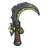

ผีคนเก็บพิษ
มอนธาตุอมตะ Lv 58–66
เจอที่
| แมพ | โซน | Lv | ภูมิภาค |
|---|---|---|---|
| หมู่บ้านคนเก็บพิษ | 58–66 | แดนใต้สีแดง | |
| หมู่บ้านคนเก็บพิษ | ลานต้มพิษ | 64–66 | แดนใต้สีแดง |
ค่าสถานะตามเลเวล
| Lv | HP | ATK | DEF | MDEF | EXP | Job |
|---|---|---|---|---|---|---|
| 58 | 24,688 | 128–192 | 26 | 10 | 101 | 76 |
| 62 | 29,648 | 138–207 | 27 | 11 | 108 | 81 |
| 66 | 35,678 | 148–223 | 29 | 12 | 114 | 86 |
ตีด้วยธาตุไหนดี
แรงขึ้น: ศักดิ์สิทธิ์ ×1.5 ไฟ ×1.25
เบาลง: พิษ ×0 มืด ×0 อมตะ ×0
วัตถุดิบที่ดรอป
| ของ | โอกาส | |
|---|---|---|
| ถุงมือคนเก็บพิษ | 55% | 1 ชิ้น (15% ได้ 2) |
อุปกรณ์ที่ดรอป (1)
| ของ | โอกาส |
|---|---|
 เคียวคู่ผีคนเก็บพิษ | 0.03% |
สกิล
ทุบพื้น (Lv 25+) · ทุบพื้น (Lv 60+) · ยิงไกล (Lv 60+)